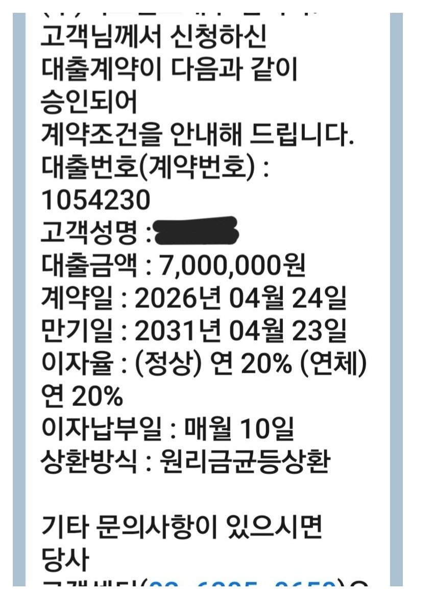

[자동차 담보대출] 새출발기금(신용회복)중 자동차담보대출 7백만 승인. 김용혁이사님 이현섭과장님 감사합니다!

재직형태: 개인사업자
사업기간: 11년
사대보험:지역가입자
소득: 연1억
신용등급:7등급
채무내역:새출발기금
필요서류:신분증, 원초본, 건강보험납부내역, 부가가치세과세표준증명, 새출발기금 납입내역, 사업자등록증
급여통장 3개월 거래내역, 차앞뒤와 주행거리사진
10여 년 동안 큰문제 없이 지내왔지만,
작년에 예상치 못한 큰 지출과 일이 겹치면서
새출발기금을 신청하게 되었습니다.
힘든 시기를 조금씩 버텨오던 중
갑작스럽게 급한 자금이 필요해 대출을 알아보았지만
쉽지 않았습니다.
사면초가 같은 상황에서 뱅크앤론을 알게 되었고,
김용혁 이사님과 이현섭 과장님의 도움으로 대출을 진행하게 되었고
처음에는 쉽지 않을 것 같기에 큰 기대를 하지 않았지만,
두 분께서 마치 가족일처럼
적극적으로 알아봐 주시고 힘써주신 덕분에
무사히 대출을 받을 수 있었습니다.
도움 주셔서 진심으로 감사드립니다.
후기가 늦어진 점도 죄송합니다.
덕분에 급한 일을 잘 해결할 수 있었고
이렇게나마 감사의 마음을 전합니다.
하시는 사업 번창하시길 바라며
다시 한번 감사드립니다.
https://cafe.naver.com/cityman88/311051